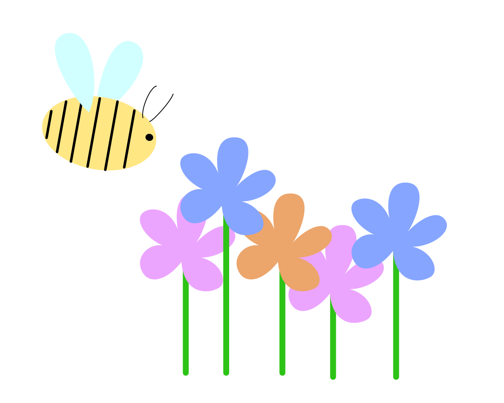

Pour vivre, les fleurs ont besoins de s'échanger du pollen et les abeilles déplacent cette poudre pour les fleurs. C’est ça la pollinisation. La pollinisation est un mode de reproduction qui concerne un grand nombre de plantes et de fleurs.
Cette opération consiste à transporter les grains de pollen, par l’intermédiaire d’un pollinisateur (l’abeille ou le papillon par exemple), d’une fleur ou plante à l’autre de la même espèce, ou d’une espèce différente. C’est ce déplacement de pollen qui va créer de nouvelles fleurs ou plantes !